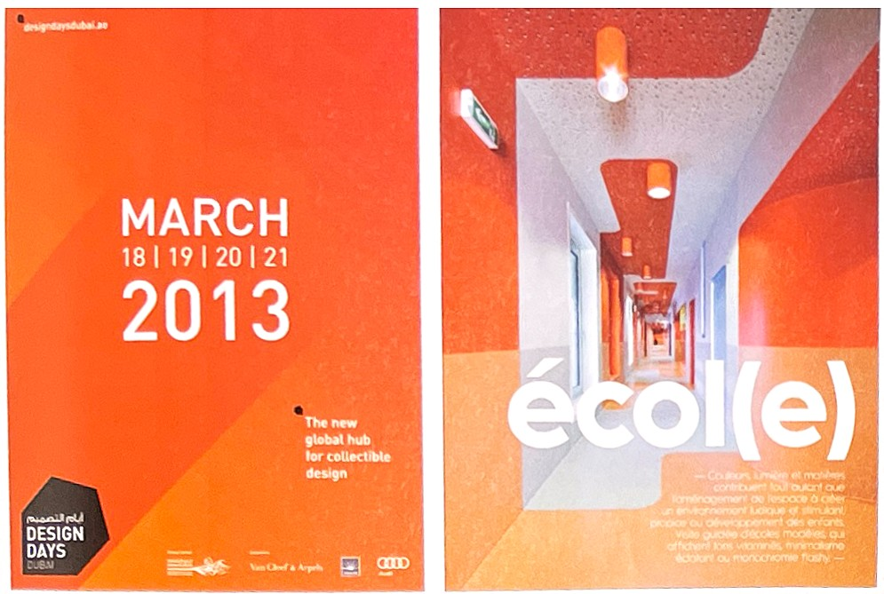
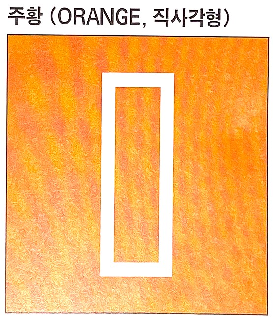
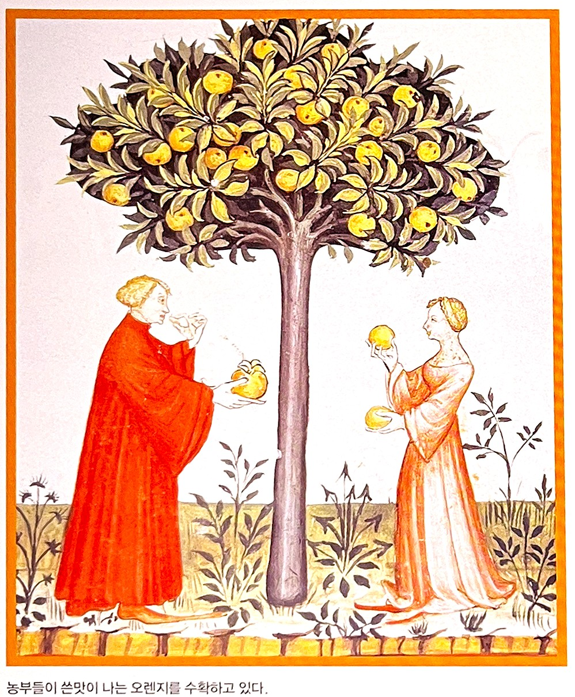
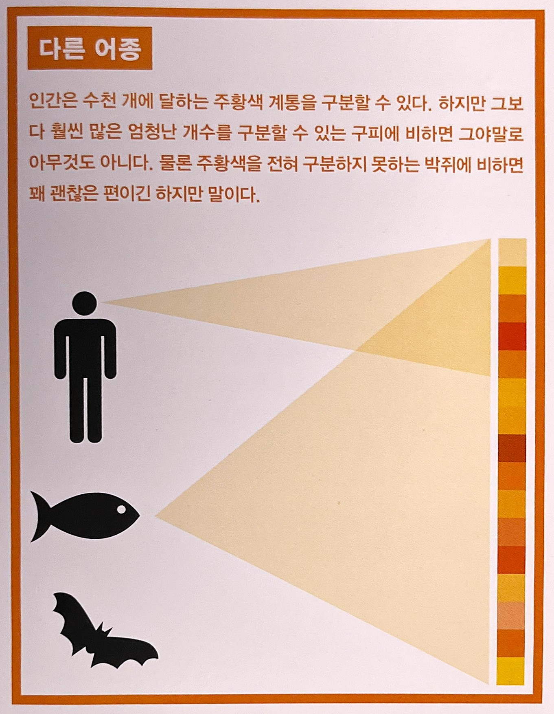
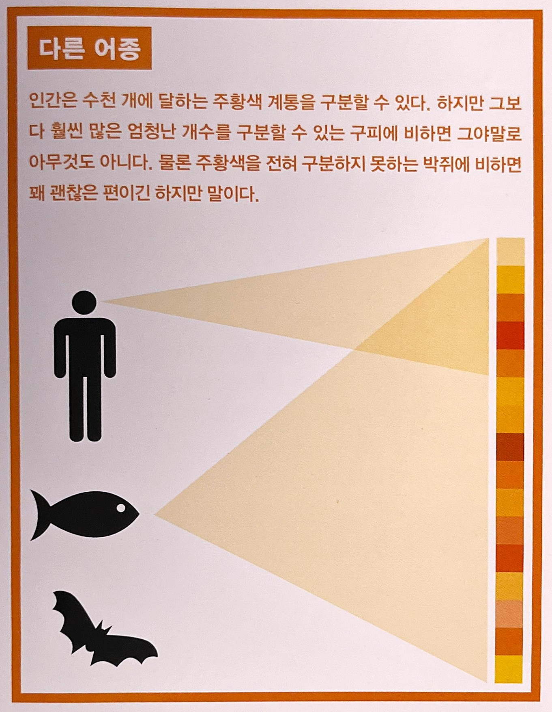
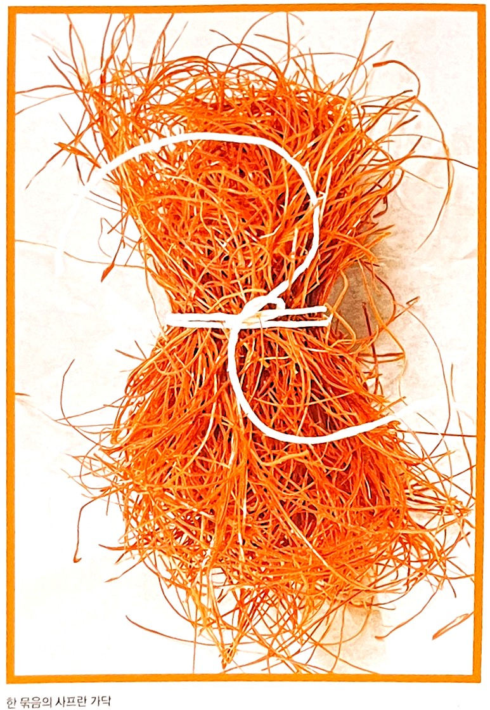
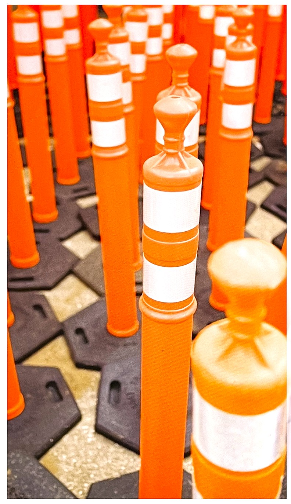
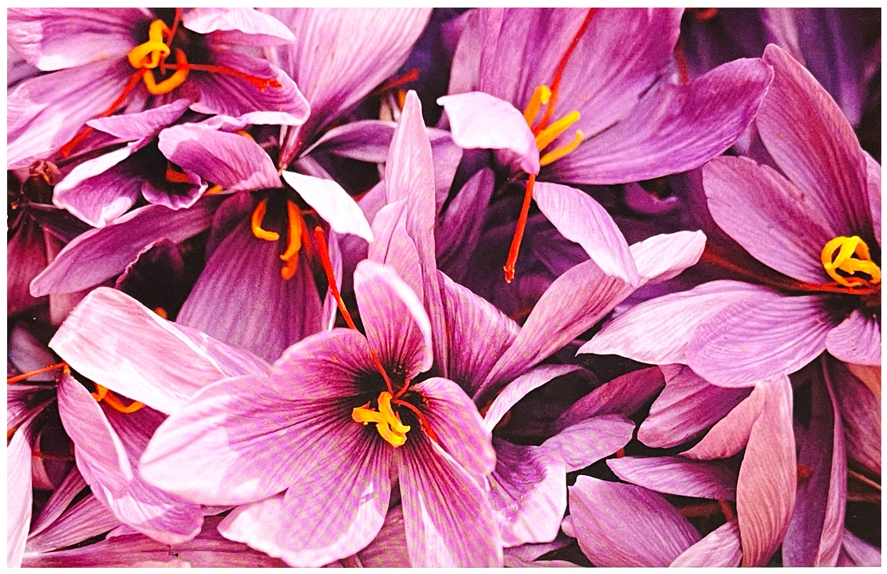
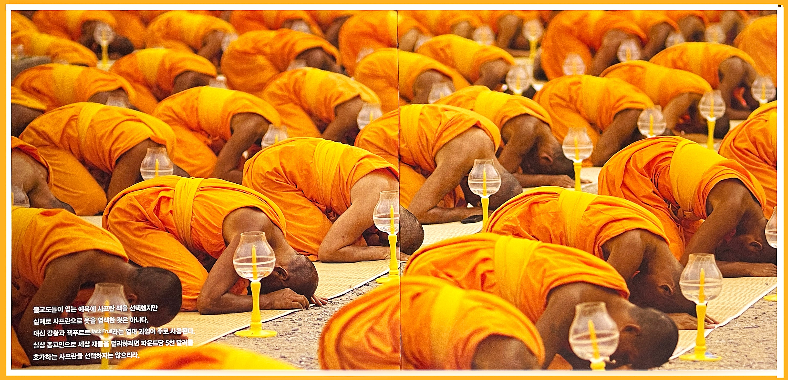
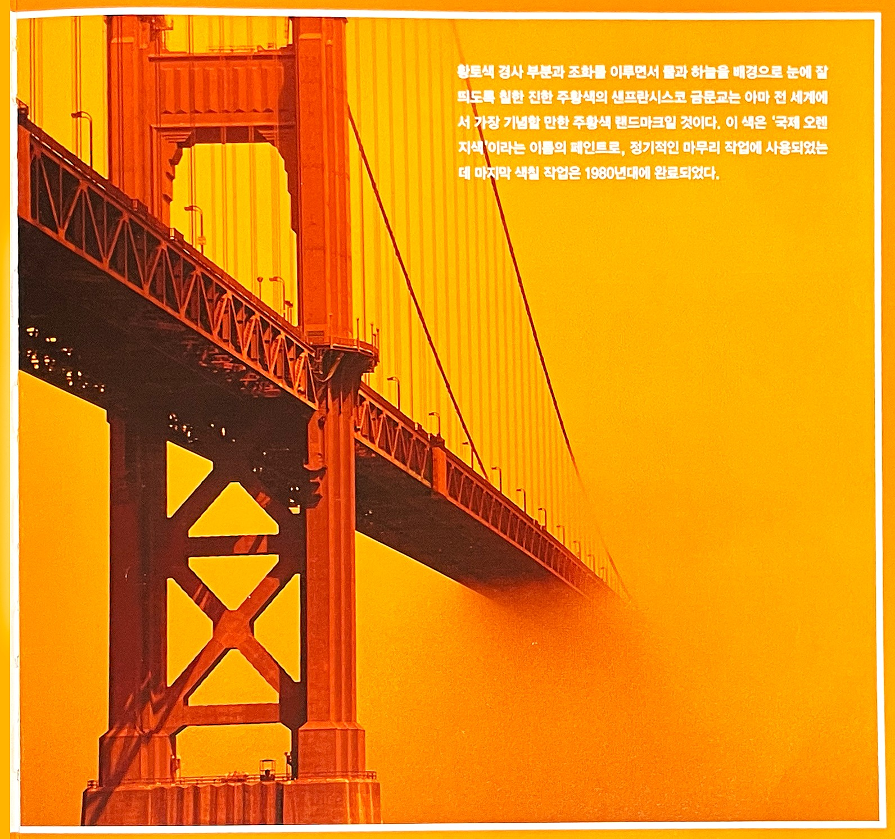

강한 주위를 유도하는 색상이다. 빨간색보다는 덜 자극적이지만 달콤한 맛과 부드러웅 맛을 동시에 느끼게 하며 무채색과 탁색과 함께 사용할 때 효과적으로 도드라져 보인다.
1. 색의 성격오랜 시간 만들어진 색상이 가지고 있는 성격 : 사교상, 화려함, 활동적, 외로움을 싫어함, 친절, 따뜻함, 감수성이 예민함, 개방적 사고 2. 색의 영향사람이 인지했을 때 느낌 : 환희, 밝음, 따뜻함, 질투, 열정, 활가, 의혹, 적극, 풍부함, 건강, 초조 3. 색의 처방색상을 의도적으로 활용할 수 있는 방법 : 무기력증 쪼는 원기회복, 빈혈에 사용, 에너지 발생, 강장제
* 주황색이 주는 역동성은 사선 구도가 주는 운동감과 닮은 점이 많다. 자동차 회사가 추구하는 힘 있는 이미지를 느낄 수 있다. ** 주황색을 사용한 통로에서 동적인 느낌이 느껴진다.주황색 상징[7]
긍정적 연상: 불, 불꽃, 결혼, 우호적, 은혜, 천상의 과일, 자부심과 야망, 지혜 부정적 연상: 악담, 시탄 연상되는 자연/자연물: 가을, 열, 오렌지 종교: 유대교-> 히브리의 신비철학, 자비
주황의 심볼직사각형[7]
주황색(Orange)주황색은 높은 온도의 백열이라든지 지는 해의 부드러운 광휘를 나타내며 눈에 온기와 환희의 느낌을 준다. 그러므로 주황색의 주위 환경은 안락한 느낌을 주며, 주황색 옷의 경우에도 다소간 즐겁거나 화려한 인상을 준다. 괴테Johann Wolfgang von Goethe의 '색채론'에서
지난 천 년 동안 주황색은 이름조차 지어지지 않은 색이었다. 많은 언어에서 가장 마지막, 아니면 마지막으로 이름 지어진 색들 중 하나로 무지개의 이름을 따서 지어졌다. 수많은 원시 부족들은 요전히 주황색의 이름을 지어야 할 필요성을 느끼지 못한다. 물론 주황색은 항상 있어 왔으며 꽃이나 열매, 채소, 동물 또는 일몰의 하늘 등 다양한 형태로 풍성하게 존재해 왔다.
사프란 등의 색소는 옷이나 캔버스에서 오랫동안 사용되었으며 국가, 종교적 정체성, 경기 제휴 둥울 상징하는데 이용되었다. 하지만 전 세계적으로 그 위상을 볼라치면 유사한 색인 빨강과는 비교조차 할 수 없었다. 어쩌면 이는 주황색 빛깔이 가진 고유한 특성과 연관된 것일 수 도 있다. 연한 주황색은 보통 노란색으로 인식되었고 진한 주황색은 갈색으로 인식되었다. 따라서 실제로 주황색이 그 자체로 보일 수 있는 폭이 매우 좁다고 할 수 있겠다.[1]
농부들이 쓴 맛이 나는 오렌지를 수확하고 있다. 출처 : 14세기 중반 중세의 건강 지침서인 타퀴넘 사니타티 [Tacuinum sanitatis][1]
같은 이름을 가진 과일이 오렌지라는 이름으로 널리 알려질 때까지 주황색은 수세기 동안 적황색, 또는 고대 영국인들에게는 황적색으로 알려져 왔다. 아마도 시인들은 한 색과 다른 색 사이에 애매모호하게 걸쳐 있는 부정확한 이 색의 이름을 지어야 할 필요성을 느꼈을 것이다. 이에 따라 열매 이름 자체가 색이 되었다. 터키옥(청록색), 인디고(남색), 루비(다홍색), 바이올렛(보라색)처럼 말이다.
주황색은 검정색과 함께 10월 31일 할로윈데이Halloween Day를 상징한다. 주황과 갈색은 미국에서 호박의 색이고 검정은 밤의 색으로 액운, 절망, 어둠과 관련이 있기 때문이다.[5]
역사적으로 사용된 주황색 계열을 보면, 인도의 역사와 문화속의 사프란saffron에서 쉽게 찾아 볼 수 있다. 이는 힌두교에서 가장 중요하고 신성한 색이다. 2000년 이상 인도에서 일상생활과 종교의식에서 특히 많이 사용되었다. 인도 테라바다Theravada 전통에서 불교 승려나 힌두교 학자들은 전통적으로 선황색saffron 혹은 적갈색 로브를 입는다. 주황색 또는 깊은 선황색은 힌두교에서 가장 성스러운 색으로 힌두와 시크교의 깃발은 전통적으로 선홍색의 삼각 깃발을 사용한다. 인도 국기의 선황색의 줄무늬는 용기, 희생, 금욕정신을 의미한다.[5]
구피의 사랑[1]구피는 대략 2~3cm 길이의 작은 물고기로 전 세계 어디서나 찾아 볼 수 있지만 최초의 구피는 서인도 제도 최남단의 트리니다드 섬에 살고 있었다. 지구상에서 발견되는 서식지에 관게없이 동일한 특성을 공유하고 있는데 바로 수컷 구피의 몸 어느 부위엔가 1~5개의 주황색 점이 있다는 것이다. 이 주황색 점은 노랑에 가까운 주황에서 빨강에 가까운 주황까지 다양하게 나타나는데, 각각의 특정한 주황색 색조별로 이를 따르는 암컷 추종자가 있다 한다.
암컷들의 색 선호도가 다양한 것은 그들의 뛰어난 색각, 즉 색 식별 능력에 기인한다. 구피들은 색상을 감지하는 광수용체를 최소 4개 이상 지니는데 자외선에 민감한 광수용체를 포함하여 최대 11개를 보유하고 있다. 반면 인간은 겨우 3개의 광수용체를 지니고 있다. 암컷 구피들이 지닌 광수용체의 개수와 종류에 따라 암컷들이 매료되는 주황색 색조가 달라진다. 진한 주황색에 민감한 광수용체라면 진한 주황색 점을 가진 수컷에 매료될 것이고, 빨간색에 더 민감한 광수용체를 가졌다면 빨강에 가까운 주황색 점이 있는 수컷을 찾을 것이다.
 

육안으로는 수컷 구피들의 주황색 점의 차이를 쉽게 볼 수 없을지 모른다. 하지만 암컷 구피들은 그 차이를 확실하게 알 수 있으리라.
형광 주황색[1] 한 묶음의 사프란 가닥
형광 주황색의 교통용 기구
낮 동안에는 노란색이 가장 눈에 잘 띄지만 일단 해가 뜨거나 지기 시작하면 주황색이 우리의 시선을 사로잡는 색이 된다. 거기에 파란 하늘이나 바다, 얼음 배경이라도 추가할라치면 형광 주황색이 그 어떤 색보다 눈에 잘 띄게 된다. 바로 이것이 주황이나 형광 주황색이 구명조끼나 구명기구, 고무보트, 기타 응급 장비에 가장 많이 사용되는 이유다. 형광색은 멀리에서도 빛을 발하며, 특히 새벽이나 해질녘 자외선이 가장 풍부할 때 가장 도드라진다. 이에 따라 건설용 도로 교통 표지나 추종 장치, 죄수복, 교통경찰이나 교통 정리원이 걸치는 조끼에 사용된다.
지구상에서 가장 값비싼 향신료[1]크로커스crocus를 자세히 들여다 보면 가루처럼 생긴 정교한 주황색 덩굴손이 보일 것이다. 사프란은 크로커스의 한 종이며 암술머리라고도 하는 이 덩굴손은 향신료와 사프란 색소의 원료가 된다. 사프란 1파운드를 만들려면 2만 개의 엄청 큰 암술머리가 필요하다. 원료가 되는 크로커스는 가을 꼭두새벽에 손으로 직접 따야 하는데, 태양 빛에 닿으면 이 섬세한 꽃이 사그라지고 소중한 암술머리가 시들기 때문이다. 크로커스 꽃에는 암술머리가 겨우 3개씩 들어 있으며 전 세계에서 가장 값비싼 향신료가 된 이유도 바로 이것이다.
사프란은 다른 향신료들과 달리 극동 지역이 아닌 지중해에서 나온 것으로, 최소 5만 년 전 이라크의 한 동굴 벽화에서 그 흔적을 찾아볼 수 있다. 고대 그리스인들은 사프란으로 옷을 염색하는 것을 즐겼다.
[사프란]
주황색의 심리학[2]팔레트에서 발강과 노랑을 혼합하면 주황이 나온다. 이러한 주황은 자극적이면서도 흥분을 유발하는 색이다. 노랑의 밖으로 뻗어가는 빛의 성질과 눈에 확 들어오는 빨강의 특성이 함께 나오는 탓이다.[3]
주황의 자극성은 빨강만큼 강하진 않지만 그것에서 풍기는 흥분, 수다, 시그러움 등의 느낌은 빨강과 비슷하다. 그래서 주황을 선호하는 사람은 개방적이면서도 너그러우며 친밀성 있어 보이면서도 포용력이 강하다. 주황은 어디에든 구애받지 않고 자유분방한 면모를 보인다. 그래서 주황은 원활한 의사소통을 유도하는 따뜻하고 진실한 감성을 드러낸다. 도한 육감적인 느낌도 들게 한다.[3]
주황하면 순간적으로 연상되는 것은 빛남, 용감함, 성숙함, 충분함, 생생함, 탄력있음, 명랑함, 온화함, 가까움, 건조함, 연함, 안락함, 사교적임, 젊음, 가을의 풍요로움, 자부심등이다. 주황의 이러한 이미지는 광고에서 곧잘 응용된다. 광고에 나오는 주황색은 따뜻하고 성숙해 보이는 효과를 노리는 일종의 장치다.[3]
오렌지색의 성향을 지닌 사람들은 자립적이고 현실적아며, 다정하고, 상냥하며, 마음이 따뜻한 사람이다. 이들은 판단력을 지니고 있어, 시험을 해본 후에 수락하거나 거절한다. 빨간색 기질의 사람들이 위협적인 반면에 오렌지색 기질의 사람들은 기회를 기다린다. 특히 긍정적인 낙관주의가 주요 특징이라 할 수 있다. 오렌지색 성향의 사람들은 친근하며, 한 모임의 중심인물이 경우가 많으며, 지역사회의 훌륭한 조력자이기도하다. 이들은 함께 모여 일하기를 좋아하며 개인적인 성공보다는 그룹 내의 성취감에 뿌듯해 한다. 일반적으로 요리를 잘하거나 스포츠에 두각을 보인다. 이들은 마음이 따뜻하고 관대한 반면에 열등감이 많아 고생을 겪기도 한다.
오렌지색 혼합색 산호색(coral) :산호색 기질의 사람들은 인생에서 자신만의 적법한 지위를 찾아낸다. 이들은 관대해서 항상 다른 사람들에게 자비를 베푼다. 이들은 매우 자발적인 사람이지만, 조금 소심할 때도 있어, 계속 전진할 수 있도록 주위 사람들이 밀어 주어야 할 때도 있다. 이들은 사람들 간의 교제를 매우 좋아하지만, 필요한 시간과 장소에 나타나지는 않는다. 이들은 남의 말을 잘 들어주고, 곤경에 처한 사람을 도와 주려고 한다. 면도날처럼 예리한 지성을 갖췄기에, 자신이 하는 일이 옳지 않다고 여겨질 때면 이를 자제하려고 노력한다.
호박색(amber) :호박색 성향을 지난 사람들의 모습에서 호박색의 기질이 느껴지기는 하나 겉으로 표출되지는 않는다. 이들은 좋은 동료이긴 하나, 그저 한쪽 면의 모습밖에는 보이지 않는다. 이들은 다른 사람에게 관심이 많고 다른 사람들이 어떻게 행도하는지에 대해 지대한 관심을 보인다. 그리고 이들은 항상 다른 사람들보다 항상 더 많이 알고 있는 듯 보인다. 일치단결의 모습을 보여주고 대단한 집중력소유하고 있다. 마음이 넓고 이해심이 깊으며, 생명의 자연적 이치가 작용하는 방식에 대한 타고난 감각을 지녔다.
[불교도들이 입는 에복에 사프란 색을 선택했지만 실제로 사프란으로 옷을 염색한 것은 아니다. 대신 강황과 잭푸르트Jack Fruit라는 열대 과일이 주로 사용된다. 실상 종교인으로 세상 재물을 멀리하려면 파운드당 5천 달러를 호가하는 사프란을 선택하지는 않으리라.][1]
[황토색 경사 부분과 조화를 이루면서 물과 하늘을 배경으로 눈에 잘 띄도록 칠한 진한 주황색의 샌프란시스코 금문교는 아마 전 세계에서 가장 기념할 만한 주황색 랜드마크일 것이다. 이 색은 '국제 오렌지색'이라는 이름의 페인트로, 정기적인 마무리 작업에 사용되었는데 마지막 색칠 작업은 1980년대에 완료되었다.][1]
주황색으로 표현된 패션[5]빨강계열에 비해 고급스럽거나 성숙한 이미지를 연출하기는 어려운 색이다. 가볍고 밝기는 하나 노랑계열의 귀여운 이미지에 비해 산뜻한 이미지 연출은 어려워 선호하는 연령층이 뚜렸하지 않다. 하지만 흰색이나 옅은 회색과 혼합하여 베이지톤이나 갈색톤의 색과 배색하면 톤온톤 배색으로 따뜻하고 풍부한 자연과 가을의 이미지를 연출하기에 좋은 색이다.
주황색 인테리어[5]빨강과 같이 공간을 따뜻하게 연출하지만 이 보다 더 친숙하고 경쾌한 느낌을 전달하므로 주황색의 다양한 색조로 거실과 가족공간에 사용하기에 적합하다.
밝은 고채도의 귤빛은 밝고 생기가 있으며 식욕을 자극하므로 식사공간에 사용하면 편안하고 활기찬 느낌을 재공한다. 주황색은 시각적으로 흥분과 자극을 주므로 빠른 서두름을 느끼게 하도록 테이블 회전율이 필요한 패스트 푸드 점에서 사용되기도 한다.
이 색은 갈색톤이나 노랑빛의 색과 함께 연출되어 연속되는 색가운데에서 액센트 색으로 많이 사용된다. 순색에 가까운 주황색은 현대적이고 신선한 분위기를 만들어 준다. 일반적으로 가정에서는 순색보다는 톤다운된 녹빛rust을 많이 사용한다. 이는 클래식하고 고급스러운 분위기를 살린다.
[참고문헌]:
[1] 컬러, 그 비밀스러운 언어 COLOR, 조앤 액스터트, 아리엘 엑스터트, 신기라 옮김,시그마 북스, 2014.9.10.
[2] 몸과 마음을 치료하는 색채, 릴리안 베르너 본즈, 번역 한창환, 도서출판 국제, 2008.1,10.
[3] 색의 힘, 하랄드 브램, 번역 이재만, 일진사, 2010.5.20.
[4] 색채론, 괴테, 장희창 옮김 민음사, 2010.4.21.
[5] 색채 기획을 위한 색이야기, 김문여 김봉섭 안희정, 교학연구사, 2011. 6.30.
[6] 좋아 보이는 것들의 비밀 편집&그리드, 이민기 지음, 길벗, 2015.5.1.
[7] 색채 디자인 교과서, 문은배 지음, 길벗, 2010.12.28
....
....
....